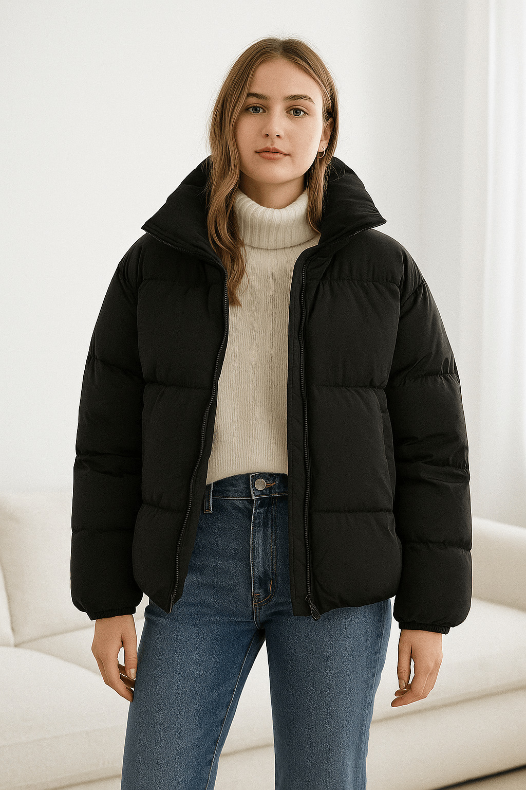
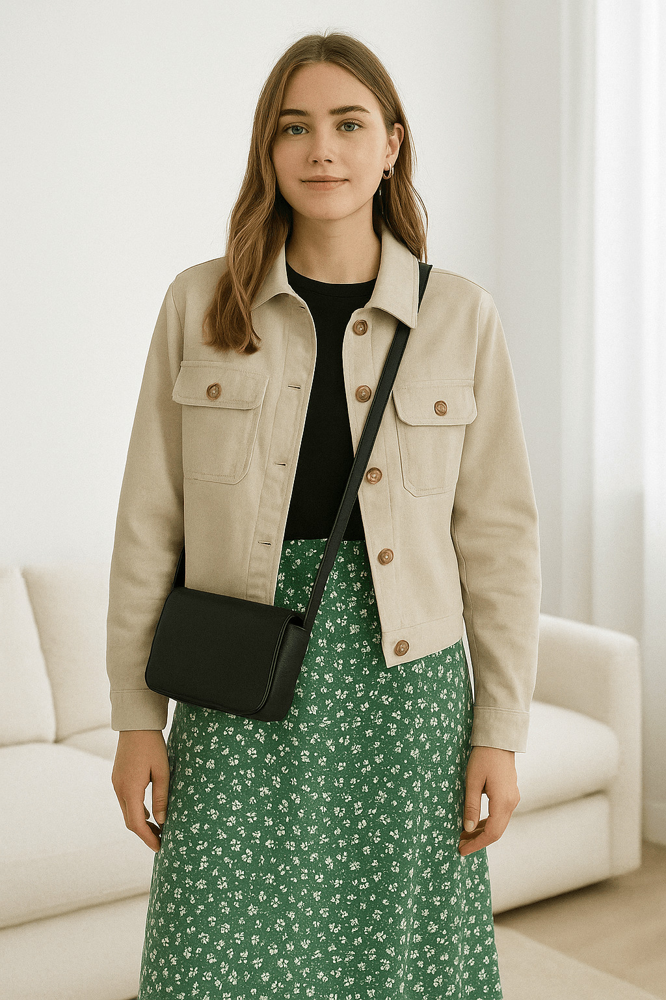
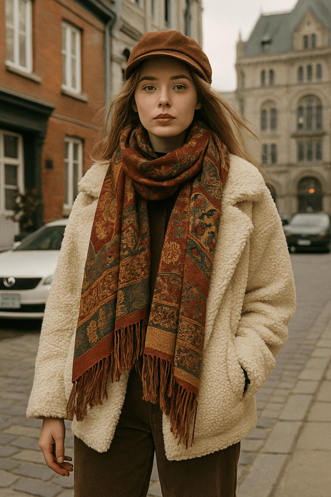
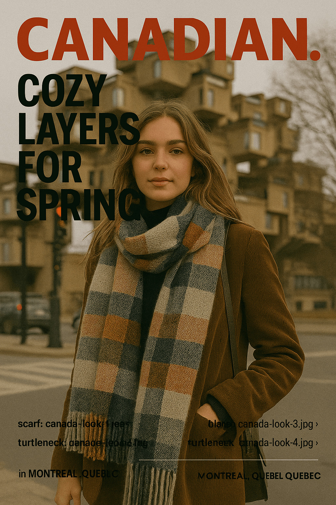

Cool North: Canada’s Most Stylish Urban Scenes
Canada’s fashion scene doesn’t clamor for attention — it earns it through quiet confidence, cultural depth, and climate-driven creativity. From the sleek streets of Toronto to the function-meets-luxury attitude of Vancouver, and the bohemian, intellectual fashion culture of Montreal, Canadian style isn’t just emerging — it’s evolving on its own terms.
Toronto: Grit, Graphite, and Streetwear Royalty
Toronto’s fashion heartbeat pulses through its neighborhoods. Queen Street West is a haven of curated thrift, designer boutiques, and local labels. Streetwear dominates, but it’s never lazy. Oversized puffers in muted tones, sharp sneakers, tailored cargos, and discreet accessories form the city’s unofficial winter uniform. This isn’t about chasing hype — it’s about grounding personal identity in layered, weather-proof expressions.
“Toronto’s fashion culture is shaped by weather and willpower — it’s a survival aesthetic, sharpened into cool.”
Labels like Raised by Wolves and Atelier New Regime have gained international traction while staying true to their Toronto roots. Meanwhile, youth collectives remix vintage with modern techwear, creating a layered street style that doesn’t just look good — it performs. There’s a rawness in the style here: denim with purpose, oversized layers for protection, sneakers that’ve seen salt, slush, and streetcar steps.

Vancouver: Coastal Cool Meets Functional Fashion
In Vancouver, fashion has to do more than look good — it has to adapt. Rain is part of the city’s DNA, and so is movement. Whether commuting by bike, hiking trails after brunch, or heading to a design studio downtown, people in Vancouver dress to stay dry, warm, and mobile. Yet, despite its utilitarian backbone, the city’s style is undeniably polished.
“The West Coast doesn’t do flashy — it does finish. And it does it sustainably.”
Technical brands reign here. Arc'teryx, born just north of the city, has become an icon. But the look isn’t just about gear — it's about harmony. Think sleek zip-ups layered under rain shells, structured joggers, earth-tone knits, and trail-ready sneakers that feel just at home on Gastown’s cobblestones as they do in Stanley Park. Vancouverites are global in mindset but local in execution.

Montreal: Art School Meets Old World Elegance
Montreal is where fashion becomes a form of philosophical self-expression. With strong French roots and a defiant creative spirit, the city champions individuality. Here, you’ll spot vintage fur coats paired with combat boots, experimental layering of textures, and scarves worn not just as accessories, but as cultural statements. The city's fashion is cerebral, rebellious, and steeped in character.

“Fashion in Montreal is both protest and poetry. It’s the art of wearing identity.”
The city's Plateau and Mile End neighborhoods brim with creativity. Indie designers showcase hand-dyed fabrics and bespoke tailoring. Markets offer up recycled cashmere, antique jewelry, and reconstructed denim. Montrealers embrace asymmetry, raw hems, exaggerated silhouettes, and slow fashion ethics — not to be trendy, but to be truthful. It’s a city that dresses like it thinks.

The Rise of Northern Aesthetics
Canada’s fashion is no longer in the shadow of its louder global siblings. It’s carving out a distinctive northern aesthetic — one that respects climate, sustainability, and cultural hybridity. It’s a look born from necessity, but refined by taste.
In recent years, Toronto Fashion Week has started drawing international attention again. Vancouver’s outdoor brands are worn by fashion editors in Berlin and Seoul. Montreal’s design graduates are landing spots in Paris ateliers. Slowly, but surely, Canada is not just participating in global fashion — it’s influencing it.
“Canada’s fashion capital isn’t a city — it’s a mindset. Unbothered, resilient, and always dressed for the weather.”
Key Pieces in Canadian Style
- Oversized technical outerwear (puffers, parkas)
- Waterproof sneakers and boots
- Vintage wool coats with personality
- Local knitwear and hand-dyed scarves
- Layered textures in neutral tones
- Utility pants with clean tailoring
In the end, what makes Canadian fashion unique isn’t just how it looks — but what it navigates. Climate, culture, identity. It’s not here to impress. It’s here to express. Quietly. Confidently. And with a kind of cool that can’t be replicated anywhere else.